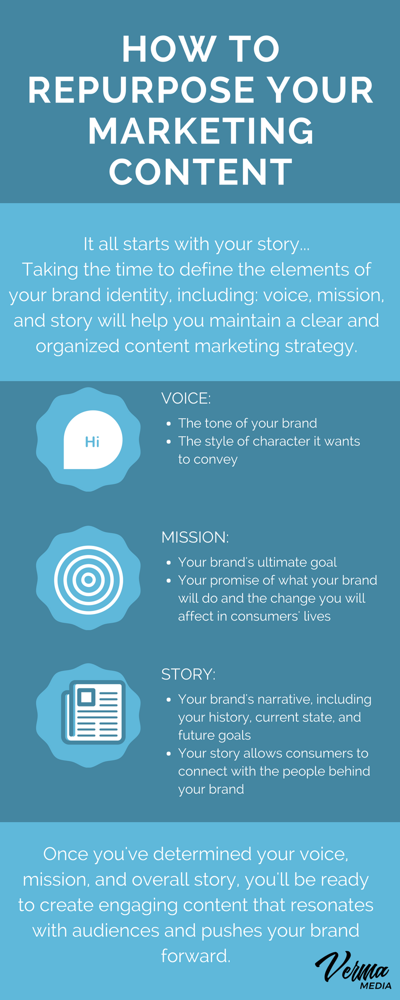
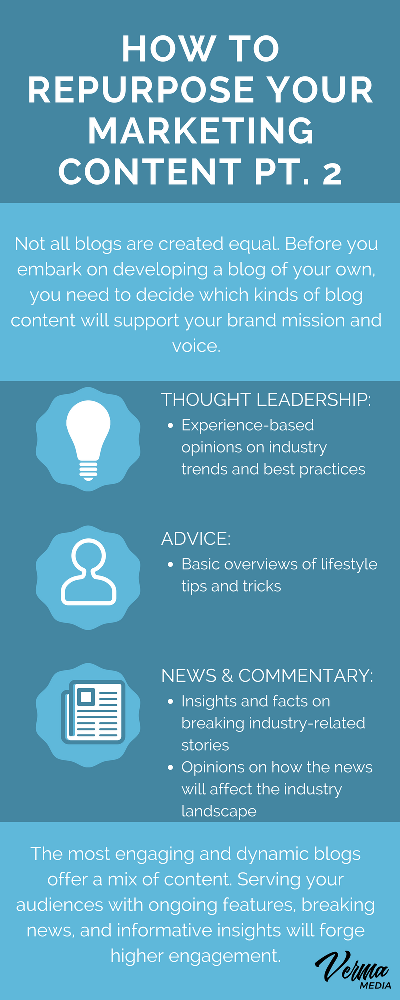
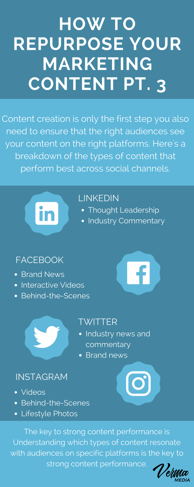
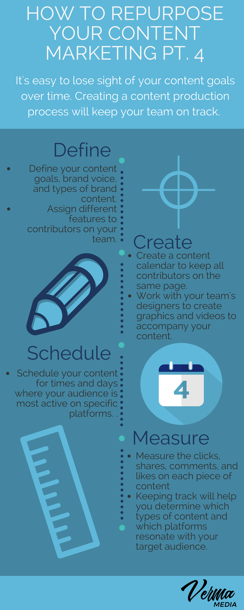

The world of branding loves its buzzwords. Chances are, if you Google anything involving “marketing,” “brand,” or even “content” right now, a laundry list of tips and tricks would appear - leaving those that have no clue what these acronyms mean more lost than when they started.
But, what if I told you that none of that stuff really matters? That, believe it or not; the best brands don’t get the greatest return on their content by focusing on just SEO, Analytics, or AdWords, but rather, focus their efforts on comprehensive storytelling.
For marketers, we live in a pretty unique world that enables us to compile and research data about our successes or failures in a matter of seconds; we want to see and measure success instantaneously. But sometimes that immediacy spoils us, as it can encourage us to lose sight of the components that go into genuine storytelling and audience connection. Now, don’t get me wrong, I find both sides of the coin incredibly important in order to be successful...which is why today I’m going share a few tricks to help you create digital content that not only resonates, but drives results.
Before you even write your first sentence of content, the first thing you need to do is define your brand story. Why are you in business? What is it about the industry or world around you that makes you want to change it?
The core of your brand comes down to finding a commonality or bond with your audience, and something honest you can share. While it’s a tall task to uncover these brand truths, taking the time to determine your brand values and mission will set your organization up for success.
Once you’ve distinguished your overarching brand characteristics, it’s time to get down to brass tax and define the nuances that comprise your brand’s voice, mission, and story.
Voice is the tone that your brand uses (think of it like anthropomorphism), in the style or character that it wants to convey. For example, a meat delivery service would probably have a strong, robust voice to match the character of its product.
Aside from voice, your mission is the greater good you’re trying to achieve in your industry. So, going back to the meat delivery example, their mission might be “saving the world with grass fed free-range meats at a low cost.” This mission communicates an environmental concern they share with their consumers while offering a competitive price-point. And finally, the story is how you got here, and usually explores the inspiration or motivation to why you started your business.
It’s important to note that all of these characteristics are interconnected and affect one another. You might hear a lot of people use these terms interchangeably (which, makes sense, but isn’t correct), but it’s important for you to distinguish their separate roles in your brand content initiatives. Once you’ve found that, it’s time to start building out your content.
Let’s forget for a second the terms content, content creator, blog, or social media for a second and talk about what you’re actually doing: storytelling. Believe it or not, you’re writing your brand’s story as your eyes scan across this sentence. Any and everything you contribute to it is compiled into chapters and paragraphs, but all of those components have to fit together across your marketing channels.
If you’ve ever posted on your blog or social media, then you’re already considered a content creator. However, the effectiveness of those posts is contingent upon the criteria you’ve set for your audience, as well as your expectations for the type of content you’re striving to produce.
When it comes to content production, there are numerous routes you can take. First and foremost, managing a blog will enable you to highlight your abilities as a thought leader or educator. Additionally, creating platform-specific content for social media channels offers the opportunity to create and distribute different types of content and brand representations across mediums. However, the biggest key to finding a successful strategy goes back to your brand’s story.
While everyone wants to be considered an influential CEO or owner regarding their commentary and insights into an industry, that’s not always the best route to take. After all, this isn’t about you; it’s about your brand, so focus on the content that best positions your brand for industry success.
Looking at competitors can be a good place to start as a lot of the channels and communities you should contribute to are already established. For example, restaurants and food brands are obviously going to highlight their visual aspects, so social channels like Facebook, Instagram, and Twitter might serve them best. A FinTech firm, on the other hand, would probably find greater success with a ‘thought leadership’ approach to by sharing blog posts on Twitter and LinkedIn. Take stock of existing channels, study the types of content that performs well on those channels, and, even, take a look at how your competitors are creating and deploying content.
Like most forms of content, most people start a blog because “it feels like something they should have.” In a lot of cases, this is a correct assumption, however, for some it’s unnecessary. Essentially, a blog is only as useful as the contributions you put into it, as well as how well it pushes your marketing efforts. However, there’s a lot of variations in terms of the type of topics you can write about. And while it’s up to you to pick and choose which ones you want to experiment with, today we’re going to go over a few common examples:
If you work in the worlds of tech, finance, or real estate, thought leadership is a term you’ve probably heard before. And while it’s commonly a buzzword used to hoist CEO’s and “marketing gurus” up, the phrase can hold a lot of weight among the right audience.
Thought leadership is essentially having an opinion or foresight on industry trends and practices. This isn’t necessarily just posting what you think, but backing up a thesis with quantitative and qualitative research. That, or you’ve gained enough reputation that people trust that you’re up on your sources or have acquired enough first-hand experience to speak about a topic with confidence. Additionally, thought leadership isn’t necessarily reserved for just highly complex industries; thought leadership relies more on a person offering a unique viewpoint than explaining a difficult concept.
An excellent example of this is Ben Turley’s article for GQ on “Why So Many Burgers Taste the Same.” As a butcher, he goes into explaining how most meat is sourced from the same major distributors; which makes us rely more on what individual restaurants are dressing up burgers with as a cursor to quality, rather than the source of the meat at hand. Turley takes the role of a thought leader based on his experience rather and unique perspective into something we all deal with daily, but perhaps don’t always take the time to consider.
Usually reserved for industries whose products provide an enhancement in day-to-day life (cosmetics, fashion, dating/social, design, etc.), advice columns give basic overviews of tips and tricks (think: lifehacks). These are generally compiled into lists, such as “Top 5 Things You Can Do to Enhance Your Summer Wardrobe” or “Ten Tips to Doing an Awesome Vacation on a Shoestring Budget.” While some of this can bleed into thought leadership slightly, advice columns/posts are geared more towards simple, more practical advice versus thought leadership is addressing the current climate of an industry.
Honestly, this is a strategy most blogs don’t follow as it requires quite a bit of keeping up with breaking stories and current events, which is a time consuming task. However, if you’re able to keep it consistent, then providing content in this manner offers serious rewards as it hooks regular readers into your content offerings. News can also bleed into thought leadership and advice as it enables you to offer your own viewpoint as a story breaks; not only will you be one of the first to cover a major event (like, the AWS breakdown), but you’ll also be the first to offer solutions to the issue at hand (5 Tips to Keeping Your Data Secure From Another AWS Breakdown “or” Why The AWS Breakdown Wasn’t That Big of a Deal). Save this in mind as an auxiliary source for content.
While these mediums are usually reserved for social media, they can also make for great blog content as well. If you’re interested in making one of your primary sources a podcast or video series, then this is an excellent addition to having a hub for your content.
Chances are if your firm was going to conduct and publish research or make infographics, then you’d probably already know that by now. However, that’s not to say that it’s not impossible for them to be a part of your greater marketing plan. After all, infographics can be some of the most popular sources of information online given their ease of reading and sharing. And if you’re going to take this approach, I’d recommend possibly dedicating quite a bit of time into your research and why it’s relevant. The goal here is to become a trusted source for information, and that requires quite a bit of legwork to get off the ground.
Now, while all of these sources of blog content can be great, it’s also important to figure out who’s going to produce it. A lot of people make the mistake of having random spurts of “I have a great idea, I should blog about it” articles that are followed by long periods of silence. This inconsistent approach does not set organizations up at reliable content creators. Running a blog and a business can be a tall task, but often, the companies that exert significant effort into their content production reap the rewards.
To begin, start looking at what you and your team’s strengths are for content. Perhaps you have someone keen to learn more about the industry but needs a direction to go in that you can guide. Additionally, some people on your team might just be better writers, so let them have their domain. And finally, make sure that whatever you all are signing up for is something that can be produced consistently (even if you bring on a full-time blogger/writer).
One mistake a lot of firms make is that they get off to a great start then flail because they don’t have a plan to follow. Creating plans and content roadmaps will keep your team organized and on task. A definitive content plan and calendar will also smooth out operations, especially if there is more than one content contributor. Make sure you have a calendar in place on what posts should be written and when they’re due.
Social media can be both a hub for your content as well as an auxiliary distributor. What that basically means is that in order to hammer down a social strategy, you have to figure out at what point of entry/exit you want a customer to take, as well as what channels you want to reach them.
This type of content is generally reserved for the apps of Instagram, Twitter, Snapchat, and Facebook. And while we could dive deep into how you should formulate a strategy for each, the fundamental goal is to highlight the visual representations of your brand’s story. For some firms, this is more evident than others (I.E.: Restaurants posting ‘food porn), but for others, it can be something you feel like you want to participate with but don’t know how. However, that’s okay sometimes as these aren’t strict or hard pass rules, but rather rough guidelines. So, if you’re an EdTech firm that wants to post about your company’s vacation on Instagram, then that’s perfectly fine even if it doesn’t fall into your larger goals.
More, visual posts have to hold the goal of being visually stunning. This doesn’t necessarily mean bringing on a professional photographer, but if visual cues are what’s going to drive your sales, then it might be the most advantageous route to take.
As we mentioned above in the blog section, thought leadership is a great method for establishing industry authority. Generally, these are distributed on platforms such as LinkedIn, Twitter, as well as linked in forums like Reddit or Quora. The goal here is to use your social accounts as vehicles for sparking or contributing to ongoing conversations. It’s important to note that these strategies are only useful if you’re maintaining or researching points of contribution and responding in a prompt manner. These communities are often active and passionate, and it’s in your best interest to put as much effort into listening and commenting on other contributions as you do in crafting your own.
There’s so much to say in this realm as most have considered it to be a beast of its own. However, email marketing is one of the most crucial points of content you can host. Not only does it have a direct link to your Call-To-Action (visiting your blog, shop, etc.) but it also has metrics that are recordable and trackable. Comprehensive services like, Mailchimp, make it easy to hone an effective content and delivery strategy.
Paid advertising and posts are integral components to successful digital marketing. However, paid campaigns can also be challenging to manage successfully. To get your feet wet, look at what keywords are most relevant to your industry, as well as how you can specifically target a direct audience. For example, if you’re the only coffeeshop in a certain part of town, then creating PPC ads leveraging the keyword “coffee shop + ( your neighborhood)” might drive sales tenfold. Additionally, it’s also important to strategize what type of content you consider your “blockbuster”or main features.
Let’s say for example you’ve struck an interview with an influential tastemaker or thought leader in your industry; this individual likely boasts a passionate and vast fanbase that will naturally be interested in engaging with the interview. Running a paid promotion touting the interview is a way to ensure you’re reaching their enthusiastic fan base. Additionally, pieces that give a specific commentary that’s considered “ahead of the curve” might be advantageous to promote as well, as long as they are still relevant to your business and overall brand objectives.
Finally, I’ll note that when it comes to targeting your paid ads/content, the overall goal is engagement with your audience (I.E.: Likes, comments, etc.) You want them to have discussions with your brand and be a part of a bigger community. With that being said, even if your post with an influencer didn’t resonate as well other pieces of content, it still provides an opportunity for your brand to start a dialogue with a new or tangential audience. At the end of the day, your company may belong to you, but your brand has a life of it’s own.
Your brand should be following other people your brand would be “friends” with in real life. While a lot of firms try to dive into “how to garner organic traffic,” the best way to explain it is to treat this brand as if it were a person. Comment and engage with the person or entity your brand finds fascinating, and, of course, respond to the reactions from fans. Brands that try too hard to ingratiate themselves in every trending conversation or cultural moment often lose more credibility with audiences. People want to see content that feels natural or is related in some way to the overall brand story and mission.
When it comes to your audience, separate them by the environments that they live in. For example, you might gain a lot of love locally on Facebook, but LinkedIn is where you connect with your industry. Additionally, I should also note that it’s important to pay attention to what channels are most popular overall, as well as the times of day in which people are most likely to engage on those specific channels. This is your opportunity to explore and discover what works and what doesn’t, as the results may surprise you quite a bit.
Our overall goal is to create lifetime customers through means that are relevant and engaging to them. This all goes back to your story, and how you want to have your customer’s help contribute to it.
Going back to our brand voice, it’s important to keep this consistent throughout all your messaging. This includes in how you set up your calendar, as well as the subject matter in your blog and social posts.
To begin, take out a calendar and start jotting down the types of posts you want for each day. Depending on your industry, you might find it more beneficial to have your ‘heavy hitting’ pieces posted early in the week so they can pick up traction, with lighter posts scattered throughout. When it comes to planning, always leave a little bit of wiggle room for current events in your industry and community. Maintaining a content plan that is comprised of both everygreen content as well as timely, trend-driven pieces will add dimension to your overall content strategy.
Another important note about planning is measuring your capacity. For some industries, it’s best to post every single day, while for others, a post or two a week will be just fine. It’s okay to say “we need five posts this week” without quite knowing what they are yet. Just the fact that you’re dedicated to doing it will usually provide enough structure. Additionally, you’d be surprised as to what you can come up with on short notice. Finally, even with all this structure, remember: this is supposed to be fun, so do just that.
Go out to the events going on in town that you want to attend. Participate in the latest viral trends (I.E.: Mannequin Challenge, etc.) Be spontaneous, but more importantly, don’t be afraid to do something out of fear that it won’t “hit” with audiences. This is your brand’s content, so have everyone that contribute to it own it and embrace it. You’re building a story for something much bigger than yourself, which is an opportunity most don’t always get to have.
The world of content is a delicate balance. On one end, we want to post what the kind of content we’d want to read, but we also feel like we want the best return for what we’re putting out. But if you know your brand’s story and mission, you’ll be perfectly fine. After all, this your brand is your baby; it’s something you’ve cherished and nurtured since it’s infancy, and it requires a lot of love and attention at every stage. But just because you care deeply about your brand’s perception, doesn’t mean you should fear the reactions of others when you’re experimenting with new content marketing. You will never be able to please every individual, but as long as you’re staying true to your voice, mission, and story your efforts will likely drive results.
Think of this as science mixed with storytelling. Once you know the story, the science behind promoting the talee will come naturally. This is where a lot of marketers make the fatal mistake of putting analytics and whatnot before brand, when in fact, it’s the opposite. Studying what makes you successful will always be there, but even more, your efforts will continue to get better with time as long as you’re learning - which, is, or should be, the goal of any entrepreneur.
As a business owner, no one will care about developing your company and its brand as much as you do. But still, you have an incredible opportunity in front of you to bring others along to help write this story, too. Take advantage of this chance, because it can be one of the most rewarding opportunities you’ll ever have.